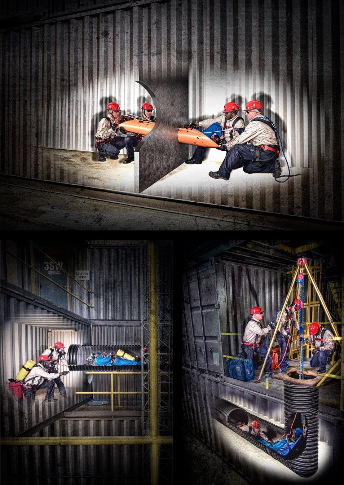
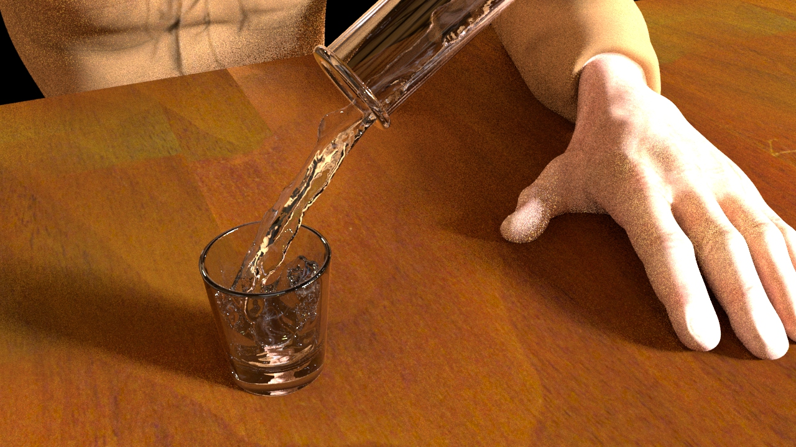

2D Digital and Traditional
Confined Space Rescue
Vector Illustration: Knot & Rope Rescue
While working at 2121 Design, I illustrated many techniques for tying rescue knots and setting up rescue equipment in a variety of scenarios. Illustration were used in a printed reference booklet used by rescuers in the field. Artwork was done in Adobe Illustrator.
Infographics: LSU CHSE Impact Report (2016)

Another of 2121 Design's clients, the College of Human Sciences and Education, produces an annual report. The 2016 Annual Report is called the "Impact" report and required over 70 individual infographics throughout the document. The above image is a small sample of some of these infographics. All assets were created in Adobe Illustrator
Lithograph: Good Times
This image was originally hand drawn onto a large stone using a wax medium, and then processed using a series of chemical washes to allow for a limited number of multiples to be printed.
Lithograph: On Top of the World

This image was made using a slight variation of the typical lithographic process, which allowed for a transfer of a rudimentary template, which was composed digitally. The digital image was transferred onto the stone chemically, where the details, shading, and artistic additions were added. there were two layers applied to this print: one color and one key.
Wood Cut: Human Nature

This image was made by printing three consecutive layers of the same linoleum carving, using a process known as a "suicide cut", so named because the process of carving subsequent layers destroys the work done in previous layers.
3D and VFX
Clay: Arm Sculpt

This sculpture was created using traditional hand building techniques out of red clay.
Animation: 2017 Show Reel
A video Show Reel featuring animation work from 2017
Arnold Render: Parkour Moves
This Still was a high-quality rendered still from a short animation that showed an imported rig preforming acrobatics on along the rooftops of a city. The still was rendered in Autodesk © Maya using the Arnold Renderer
Bifrost Simulation Render: liquid pouring into a shot glass
This Still was a high-quality render from a short animation that features a short simulation using the Bifrost liquid simulation system inside of Maya.
Character Model: Juncture
This Character is an original fictitious member of a dystopian society that is controlled remotely using electrical impulses. This particular individual has been dubbed "Juncture" due to his mash-up of parts. The model itself was sculpted from scratch in ZBrush.
Procedural Terrain: Desert Canyon
Terrain using Houdini heightfields, a 2D volume that allows for terrain building based on noise patterns, simulated erosion, masked height manipulation and more.
Houdini Smoke Sim: Steam Train
A simple smoke sim for an animated train. Simulation, render and animation done in Houdini. Model was found online and altered in Maya for animation in Houdini.
Photography
Digital Photography: Emulation of Caravaggio's paintings
As part of an assignment, I was asked to pick an artist from history and use his or her work as inspiration for a sequence of images to be captured using digital photography. I chose to reimagine some of Caravaggio's most famous paintings in a theatrical and somewhat irreverent mimicry of the paintings using my roommates and some modern-day props.
Digital Photography: New York Skyline
While in Manhattan, in New York City, New York, I had an opportunity to ascend one of the city's most iconic buildings--the Empire State. Faced with a spectacular, yet nauseatingly over-photographed view, I set out to manipulate the photograph in an interesting way. As such, I processed the digital photograph as if it were a black and white film print, trying to capture some nostalgia in the process.
Digital Photography: Senior Portraits
As a personal favor, as well as a learning experience, I volunteered to capture some senior portraits of a young lady who graduated from LSU in Spring of 2017. The images above are a sampling of that photo session.
Video
Music Video: Joyride
A music video featuring a leasurly drive down some local scenic roads
Documentary: Finity
A documentary about different perspectives and opinions on the limited nature of our lives. This documentary is the result of a semester-long effort for a senior capstone class.
Promotional Video: SparkFORCE Industrial
This was a promotional video for a new program developed by 2121 Design. The process involved editing using stock video assets and custom motion graphics created in Adobe After Effects to explain the program to potential new customers.
Fictional Short: Eliminated
This fictional short was the result of a process of experimenting with different pieces of the moviemaking process. During its making, I experienced many of the different aspects of that process, such as writing, directing, camera movements, lighting, acting, editing, sound design, motion graphics generation and animation.
Code & Web Design
Data Visualization: Traffic Accidents in Baton Rouge
The data visualization above was created using a javascript version of processing, called p5.js a java-based implementation of the processing language. P5 has a number of useful utilities for reading forms that makes it possible to read and process even very large data sets and output a visualization in the web browser. In this particular case, the data represented is any and all recorded accidents that happened in East Baton Rouge Parish between 2010 and 2016 that include geolocation data. The data is sourced from the open data resource Open Data Br
Procedural Photography: Using Data for an Artistic Purpose

The images above were created by utilizing a dataset taken from the color information of each pixel contained in the image associated with each visualization. The first image demonstrates how the color data is represented: the greyscale "Hello World" is composed of letters on a flat black background filled with a constant gradient. The program interprets each pixel in the image and plots its position on a plane of the same dimensions as the original image. The x value of the point corresponds to the x value of the pixel and therefore is not changed. The y value of the point is determined by the value of the pixel's respective RGB intensity values; brighter reds will appear higher on the plane than darker reds, and so on for the greens and blues. Because the first image is in greyscale, each pixel has equal values for red, green and blue, and therefore each scoped color is the same as the others. The other two images show all three channels and just the red channel (respectively) scoped on top of the source image.
Website: Louisiana Biomedical Research Network

In this project, I was hired to do a complete website redesign on the existing LBRN website. All aesthetic aspects of the redesign were left up to me. The site is totally responsive. I worked closely with a java programmer, to develop a custom back-end experience by leveraging much of the functionality of Jekyll, a static site generator. Jekyll's blog-friendly platform provided much of the founation for a more custom content management solution.
Website: 2121 Safety Marketing

For the development of this website, I was on a small team of front-end developers who were tasked with integrating and modifying a naked bootstrap template into the CMS backend of Adobe Business Catalyst. We modified much of the original code, and added in a few totally custom modeled, including the HTML5 video header that appears on the home page.